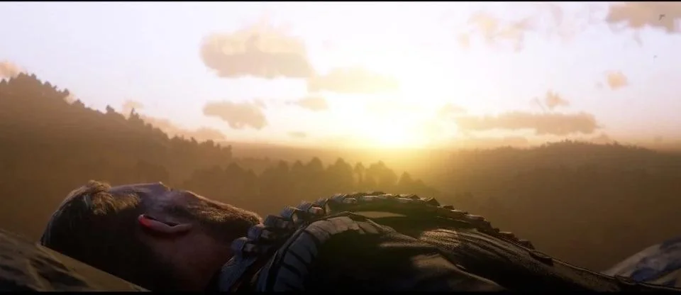

Redenção e Morte
A história de Arthur Morgan em Red Dead Redemption 2 é uma das mais emocionantes e comoventes do jogo, e sua redenção e morte são momentos centrais para o enredo e para o desenvolvimento do personagem.
Arthur começa o jogo como um membro leal e pragmático da gangue Van der Linde, que vive para o presente e tem uma visão cínica da vida. Ele não acredita em muitas coisas além da sobrevivência e da lealdade ao líder da gangue, Dutch van der Linde. Porém, à medida que a história avança, Arthur começa a se questionar sobre seus próprios princípios e sobre o rumo que a gangue está tomando.
A redenção de Arthur
O processo de redenção de Arthur é iniciado por uma série de eventos que o fazem refletir sobre sua vida. Em primeiro lugar, Arthur descobre que tem uma doença terminal — tuberculose —, o que o leva a enfrentar a morte de uma maneira muito mais direta e urgente. Esse diagnóstico serve como um ponto de virada em sua vida, forçando-o a reconsiderar suas ações passadas e a buscar algum tipo de redenção, especialmente em relação aos erros cometidos com pessoas que ele ama, como o jovem John Marston e sua esposa Abigail.
Arthur começa a questionar as atitudes de Dutch e suas decisões cada vez mais erráticas. Ele vê que, apesar de Dutch ter começado com ideais de liberdade e justiça, a gangue se perdeu em uma espiral de violência, desconfiança e traições. Além disso, ele começa a se distanciar de alguns membros da gangue, como Micah Bell, que se torna cada vez mais um antagonista dentro do grupo.
Arthur também tenta corrigir algumas das injustiças que cometeu ao longo da vida, buscando ajudar aqueles que precisa, como os pobres e oprimidos, e até mesmo fazendo esforços para proteger John Marston e sua família, visto que John é, de certa forma, uma versão mais jovem dele, alguém que também se deixa levar pelas ideais de Dutch, mas com um coração mais puro.
A morte de Arthur
A morte de Arthur é um dos momentos mais trágicos e emocionantes do jogo. Durante o final do jogo, após a gangue se desintegrar devido aos conflitos internos, Arthur enfrenta sua última luta. Ele tem uma conversa profunda com Dutch, que revela finalmente ter se perdido em sua própria busca por poder e controle, e não ter mais a visão idealista que tinha no começo. Arthur, ainda fraco devido à sua doença, vai atrás de um último objetivo: garantir que John Marston escape e tenha uma chance de uma vida melhor.
No clímax da história, Arthur enfrenta Micah Bell em um confronto decisivo. Micah, que representa tudo o que deu errado na gangue, é uma figura traiçoeira e egoísta, que já havia sabotado a gangue e se aliado com os inimigos. Durante essa sequência, Arthur sofre um golpe fatal. A morte de Arthur é uma mistura de aceitação e tristeza: ele reconhece os erros de sua vida, mas também sente que, ao menos, fez algo de bom no final ao tentar salvar John.
A despedida
Arthur tem sua morte no final de Red Dead Redemption 2, e seu legado é refletido na forma como John Marston e outros personagens lidam com o futuro. Antes de morrer, ele tem um momento de reconciliação com John, passando-lhe sua confiança e esperança para que ele, pelo menos, possa viver de maneira diferente. Sua morte também é um reflexo da ironia da vida e da busca incessante por redenção: Arthur tenta corrigir sua vida, mas paga o preço da maneira mais dura, sendo consumido pela sua própria doença e pelas escolhas que fez.
A morte de Arthur não é apenas o fim de um personagem, mas também um momento de reflexão profunda sobre o custo das escolhas, o peso das ações passadas e a possibilidade de redenção, mesmo para alguém que, à primeira vista, parecia ser completamente perdido. Para os jogadores, ela serve como uma lição sobre o valor do arrependimento e da busca por algo mais significativo, apesar de todas as adversidades.
